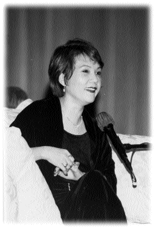

| Sous les projecteurs |
Le 26 août 1986 (initialement en chinois) |
 Toutes les maladies viennent de notre mental. À l'origine, le soi-disant "je" n'existait pas. En conséquence, le concept de " Je suis malade " n'existait pas. Au tout début d'une maladie, si nous avons une attitude ferme en la rejetant, en ne laissant pas le concept de " Je suis malade " exister, alors, cette maladie s'enfuira immédiatement.
Toutefois, vous êtes tous trop faibles. Vous dites souvent : " oh ! J'ai mal ici. J'ai mal là. " Avoir fréquemment ces pensées est comme pousser une porte ouverte. Elle est ouverte seulement un petit peu au départ, mais comme vous fixez votre pensée sur "je suis en train de tomber malade", alors la porte s'ouvre en grand, par le pouvoir de votre pensée négative. Dès que la porte est grande ouverte, la maladie envahira rapidement votre corps. Si vous avez toujours une conscience claire à tout instant, et ne permettez pas aux mauvaises pensées d'entrer, rien ne peut vous envahir.
Tomber malade est comme creuser un trou dans notre première couche extérieure. À l'origine, il y a une couche d'énergie protectrice qui couvre nos corps. Elle nous protège contre l'invasion du pouvoir négatif extérieur. Tomber malade, c'est comme avoir un trou dans la couche d'énergie protectrice, qui donne un accès direct à la maladie vers nos corps. C'est comme cela que nous tombons malades. Si la couche d'énergie protectrice reste intacte, la maladie ne peut pas entrer. Les pratiquants spirituels sont en général en bonne santé, tandis que les non pratiquants sont facilement perturbés par les influences extérieures, et cela équivaut à ouvrir la première porte et à inviter les maladies à entrer. Par le calme, une atmosphère catastrophique peut être naturellement résorbée. Notre "karma fixe" peut être changé de cette façon, tout comme la lumière peut chasser les ténèbres.
Certaines personnes croient aux prédictions des diseurs de bonne aventure : à telle ou telle date, ils vont attraper telle ou telle maladie, ou avoir tel ou tel accident ou catastrophe. Alors, ils auront des pensées pleines de peur, qui ouvrent aussitôt une petite porte dans leurs corps, et toutes sortes de mauvaises choses viendront naturellement.
Si un pratiquant a un esprit pur et est concentré mentalement, la couche protectrice d'énergie autour de son corps est comme un bouclier de diamant, et aucune maladie ne peut pénétrer. Même si nous sommes vraiment malades, nous ne devrions pas nous laisser troubler. Quand nous nous savons malade, nous devrions pratiquer avec encore plus d'assiduité et utiliser notre pouvoir pour guérir. Ce corps est notre maison et nous sommes les propriétaires. Sans invitation du propriétaire, comment qui que ce soit pourrait entrer ? Si vous pouvez faire partir la maladie avec une attitude ferme, aucune ne s'installera. Même un petit rhume, une personne sensible peut le sentir à un stade très précoce. Pourtant, ceux qui ne pratiquent pas et ne sont pas sensibles, n'auront pas conscience de telles choses.
Si nous voulons sentir l'invasion de la maladie, nous devons garder une conscience absolument claire, et laisser nos corps rester dans un état d'alerte élevé. Dès que nous sentons l'invasion d'une maladie, nous devons méditer immédiatement, réciter les Noms Saints, et nous dire fermement à nous-mêmes : " je ne veux pas de maladie. Elle n'est pas la Vérité. Je ne veux rien qui me soit imposé. Je ne veux que la Vérité. " Alors, la maladie s'en ira. Ceux qui pratiquent depuis longtemps et qui ont une force de caractère, peuvent éliminer une maladie en une ou deux secondes. Ceux qui ne pratiquent pas et qui n'ont pas de volonté, ne croient pas avoir ce pouvoir de guérison.
En fait, notre corps a des résistances naturelles contre la maladie et peut se guérir lui-même. Beaucoup de docteurs disent à leurs patients : " Voici des médicaments, mais vous devriez surtout compter sur vous-même pour vous soigner. " Car, nous sommes des êtres supérieurs, il n'y a rien que nous ne puissions faire. Toutefois, ce que vous pouvez faire, dépendra de combien vous y croyez. Autrement dit, ce pouvoir latent et illimité peut apparaître de manière différente suivant la force de chacun.
Nous, les pratiquants Guan Yin sommes plus puissants que les autres. Ceci implique le pouvoir que nous utilisons pour chasser les maladies. Si vous tombez malade, c'est parce que vous voulez être malade. Votre esprit peut ne pas le vouloir, mais votre corps, si. Aussi, nous devons éduquer nos actions, nos paroles et nos pensées. Si certains endroits de notre corps aiment bien être malades, nous devons progressivement leur apprendre les concepts corrects, tout comme les enfants apprennent de nous. S'ils ne comprennent pas, nous pouvons leur donner un médicament quelconque et leur dire : " D'accord, vous êtes à l'abri maintenant. " Quand nous laissons notre corps renoncer véritablement à la maladie, il se rétablira.
Pourtant, les gens font généralement le contraire. Ils essaient de s'occuper de leur corps de toutes les manières possibles, mais ignorent leur pratique spirituelle. C'est pour cela que je vous enseigne de veiller à la pureté de vos actions, paroles et pensées. Si celles-ci sont pures mais que votre corps ne l'est pas, vous serez dans la situation où votre esprit est parfait, mais votre corps est toujours vulnérable et peut tomber malade. Donc, nous devrions nous servir de notre mental pour enseigner au corps. Nous devrions lui enseigner qu'il n'y a pas de soi-disant "je" qui peut tomber malade, de tout laisser tomber, dont l'idée "d'être malade", et ainsi il ne sera pas malade.
La maladie, en fait, n'est pas du karma. Le vrai karma est notre ignorance. Par ignorance, notre âme est sombre et impure. Si notre âme est purifiée, il n'y aura plus ni Dieu, ni Maya, sans parler de maladie. Au départ, nous n'avions pas de maladies. Ainsi, dans le Soutra du cœur, il est dit : " tous les dharmas se ramènent au vide. Ils ne naissent, ni ne cessent, ne sont ni sales, ni purs et n'augmentent, ni ne diminuent. Ce qui fait que dans le vide, il n'y a aucun sentiment, aucune forme, perception, formation mentale, conscience, il n'y a pas d'yeux, d'oreilles, de nez, de langue, de corps, de mental. Il n'y a aucune vision, audition, aucun odorat, sens du goût, du toucher. " S'il n'y a rien, comment pouvons-nous être malade ?
C'est parce que nous nous accrochons au corps, que nous avons autant d'ennuis. Nous devons faire plus de Guan Yin et méditer plus, alors nous n'aurons pas d'ennuis.